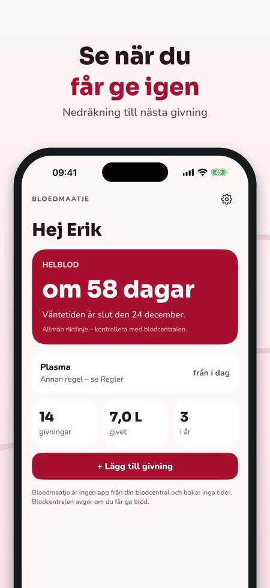
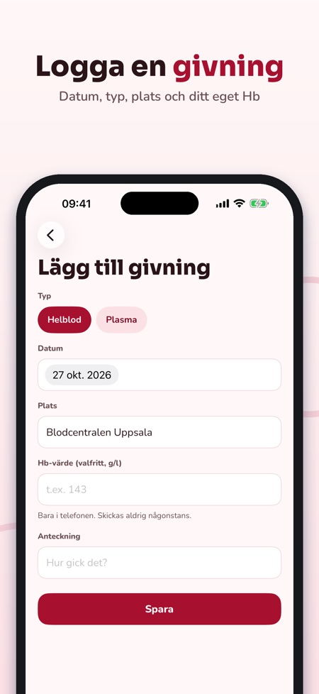
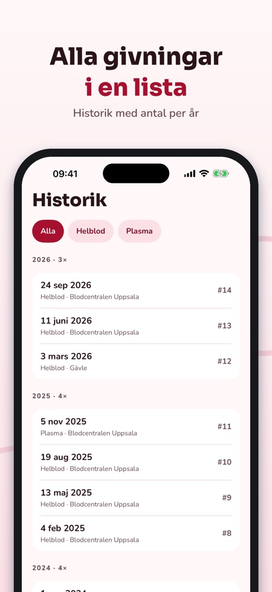

Logga dina blodgivningar.



Bloedmaatje håller koll på dina givningar och visar när du får ge blod igen.
Logg, nedräkning, påminnelse, historik och milstolpar kan användas utan köp. Bloedmaatje Plus är ett engångsköp för widget, statistik och Hb-logg. Ingen prenumeration.
Bloedmaatje ger inga medicinska råd och avgör inte om du får ge blod; det gör blodcentralen. Appen är fristående, inte kopplad till någon blodcentral, och bokar inga tider. Dina Hb-värden stannar i telefonen.